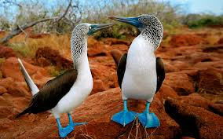
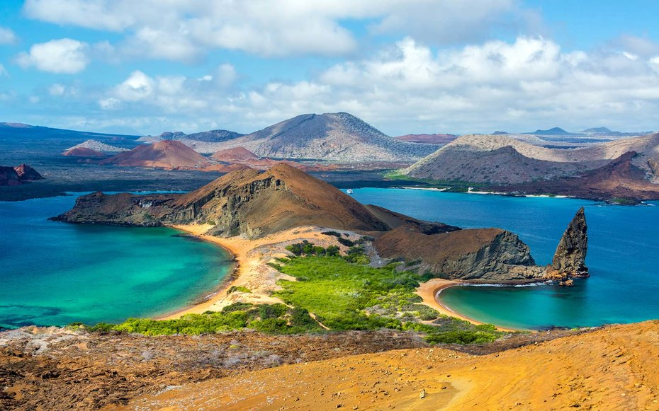
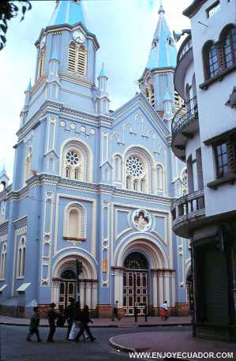
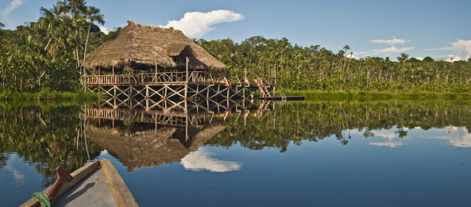
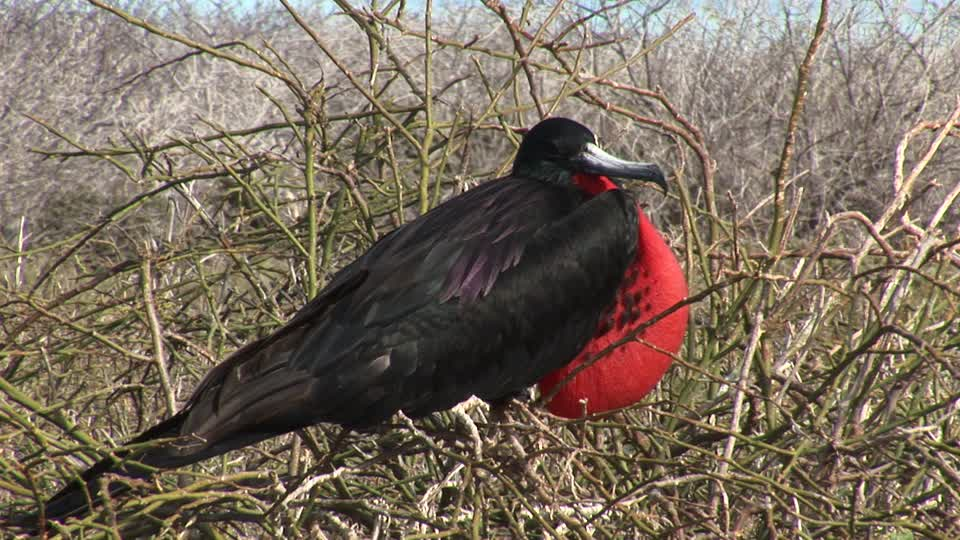
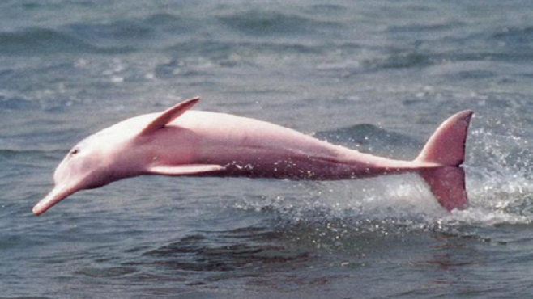
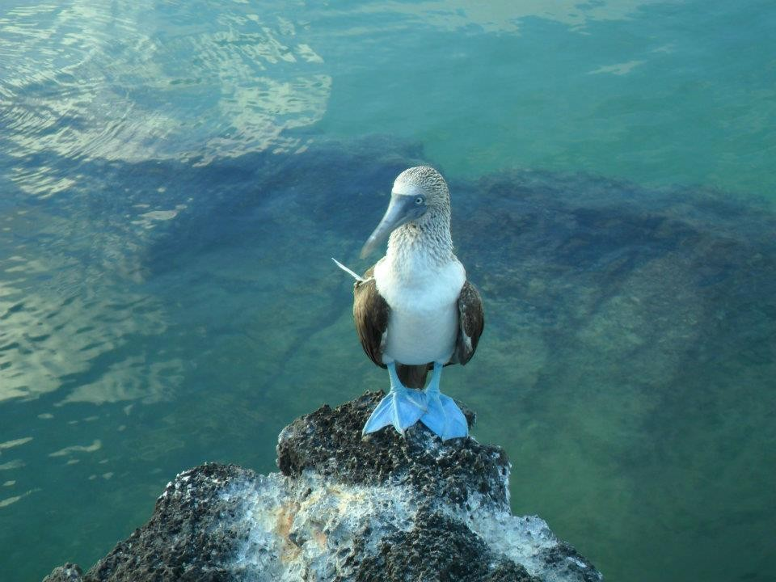
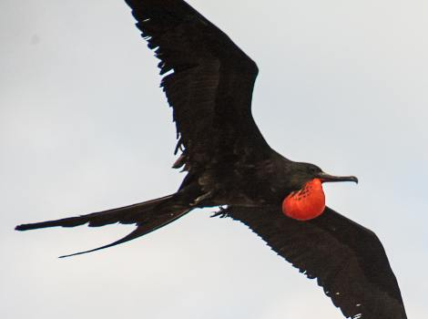

Hola, soy Luisa
Este es mi blog de Turismo
Les comparto unas cuantas
imagenes de las bellezas que tenemos en nuestro país Ecuador.
Somos un país con una vasta e inigualable riqueza natural y cultural. La diversidad de nuestras cuatro regiones (Costa, Andes, Amazonía y Galápagos) ha dado lugar a cientos de miles de espercies de flora y fauna.
Ofrecemos atractivos históricos como Quito, gastronómicos y una variedad de culturas y tradiciones.
Ven te invito a conocer este bello país, no querrás irte.